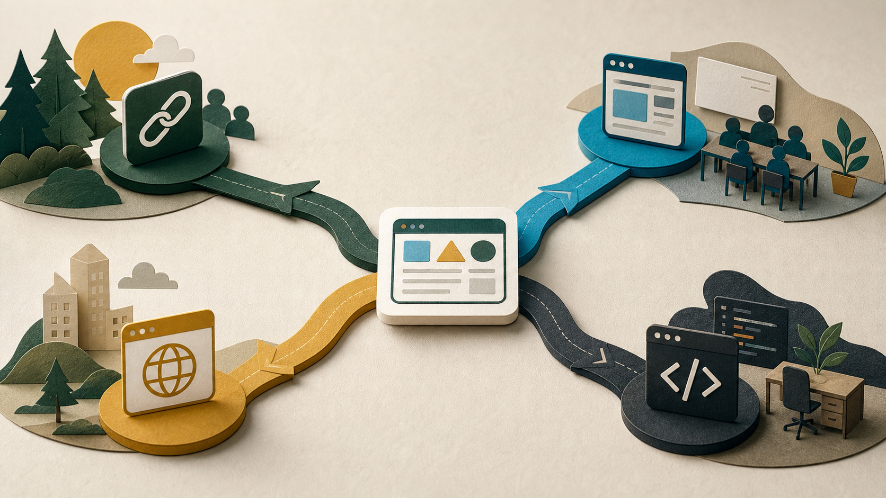

Living Ledger
Behavior, home, school, and community fused into one system.
Interesting because it attacks the disconnect. Unsettling because it can become surveillance.

From radical ideas to working artifacts.
We were not asking for a faster version of school. We asked people to dissolve the problem.
Your role: act as a lead architect and historian.
Your task: dissolve the problem. Do not simply optimize the existing system.
Output: describe 2036 in action, then name three radical decisions made in 2026.
Some of it was fascinating. Some of it was deeply unrealistic. That tension is useful.
Interesting because it attacks the disconnect. Unsettling because it can become surveillance.
Useful because it names the schedule as part of the problem.
Powerful because assessment happens through maintaining an ecosystem.
Automated enforcement replacing relationship, judgment, and trust.
Large-scale laws with no local path from here to there.
Tools “dissolving” motivation, workload, dyslexia, and complexity overnight.
Legally dissolving the 180-day / 6-hour seat-time requirement.
Banning teachers from performing any task that could be automated.
A shared “Success Ledger” between parents, students, and admins.
If a teacher cannot try it, revise it, or show it to someone else, it is not the right 2026 move yet.
Student-owned work. Teacher as consultant-on-retainer.
Replace points-as-currency with evidence of impact.
Invite the world in. Experts validate real work.

Not the whole bridge. One working artifact that makes the idea visible.
A first prototype for Feedback First Firewall.
Create a single-file HTML web app called "Evidence of Impact Dashboard." Let a student add evidence of something they contributed, revised, built, helped, or learned. Include evidence types: growth, contribution, revision, collaboration, reflection. Show entries as cards. Show a simple summary count. Use HTML, CSS, and JavaScript in one file. Store entries in localStorage for the demo.
Words, forms, buttons, cards, links, and sections.
Layout, spacing, color, type, polish, and responsive behavior.
What happens when someone clicks, types, saves, sorts, or filters.

Start simple. Only add complexity when the project needs it.
Best for collaboration, rough drafts, and showing the build process.
Best for simple embedded tools that do not need live AI or cloud storage.
Best for a standalone URL, multiple files, and a real static website.
A static prototype is safe because it is small. Logins, rosters, grades, uploads, and shared records change the risk.
Open the hands-on page when it is time to build together.
Use this when people need help making the next move.
Compare Canvas, Google Sites, GitHub Pages, and IDE workflows.
Then let the evidence change the conversation.